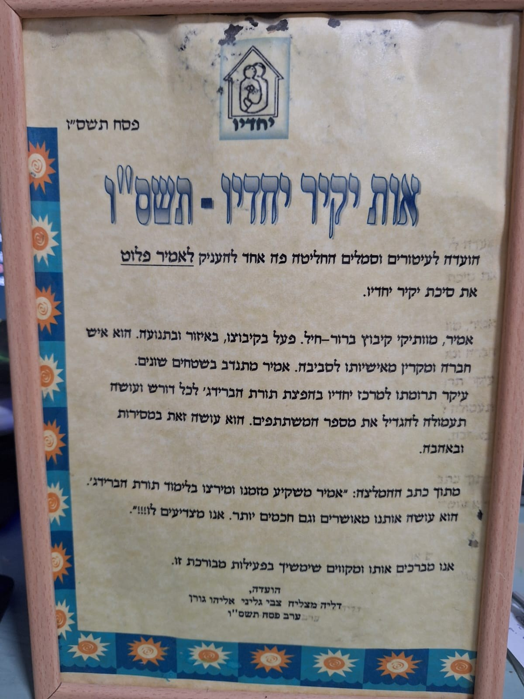
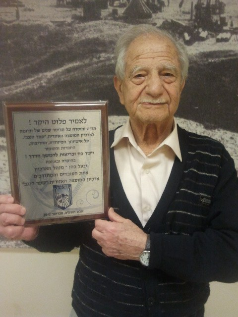
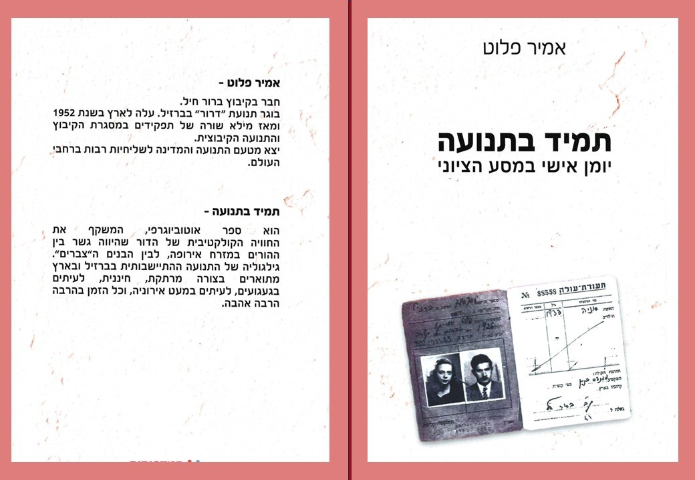

גלריית זיכרונות
רגעים שנשארים איתנו
אוסף תמונות מתוך אלבום המשפחה — רגעים קטנים וגדולים מחיים של אהבה, בית, משפחה ונתינה.
חזרה לעמוד העיצוב





גלריית זיכרונות
אוסף תמונות מתוך אלבום המשפחה — רגעים קטנים וגדולים מחיים של אהבה, בית, משפחה ונתינה.
חזרה לעמוד העיצוב

